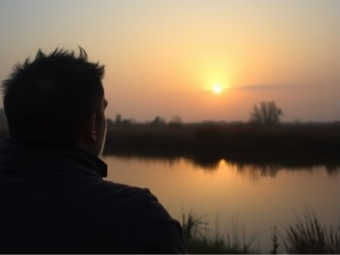

Zitten met je ongemak

Leren zitten met je ongemak: de sleutel tot verandering. We zien het allemaal wel eens gebeuren: de ene vriend of collega die steeds weer dezelfde fout maakt.
Hij komt telkens bij je klagen over het vele werk dat hij er steeds bijkrijgt. Zijn werkuren volstaan al lang niet meer om alles afgewerkt te krijgen.
Al vaak hebben jullie het erover gehad:
“Zeg gewoon nee, dat het je niet meer lukt. Ze zullen het heus wel begrijpen.”
“Ja, klopt, dat moet ik doen want zo kan het niet meer verder… Volgende keer ga ik écht nee zeggen!”
Het gesprek helpt hem telkens weer een beetje op weg, en jullie zijn er beiden van overtuigd: de volgende keer zeker zal het anders zijn.
De valkuil van de redder
Tot het moment daar is.
“Ik heb echt je hulp nodig, collega X, dit kan jij als geen ander.” (vlij, vlij)
Of: “Ik verzuip in het werk, kan je me helpen?” (waarmee de redder in hem meteen geactiveerd wordt).
Die assertieve NEE die hij gisteren nog zo met jou geoefend had, ligt al klaar op zijn lippen om krachtig te schitteren… om vervolgens geruisloos in de grond te zakken richting vergetelheid.
Want nee is niet wat er uit zijn mond komt, maar wel:
“Ja, natuurlijk, geen probleem!”
Jij kijkt dit hele gebeuren met lede ogen aan. Hoe kan dit nu? Jullie hebben het nog zo besproken en ingeoefend!
“Ik kan het wel snel even doen”, is zijn antwoord op je aanmaning. “Ik kan de mensen toch niet laten stikken?”
En daar zit het punt.
Je collega voelt op het moment zelf duidelijk beter bij een JA. Hij heeft het gevoel zijn verantwoordelijkheid op te nemen, mensen uit de nood te helpen – en dat geeft hem een goed gevoel.
Tot al die JA’s na verloop van tijd weer opstapelen tot een grote nee vanbinnen.
De spiraal waarin we allemaal vastzitten
Zo zit onze vriend of collega vast in een spiraal… zoals we er, als we eerlijk zijn, allemaal wel eentje hebben.
Als buitenstaander zie je perfect wat er moet veranderen.
En ook wijzelf weten vaak wat we zouden moeten doen, maar om een of andere reden slagen we er niet (altijd) in.
Waarom is dat?
En wat kan ons helpen wél te veranderen?
Als je het mij vraagt, draait het om één ding: de bereidheid enig ongemak te ervaren.
Want dat is precies wat nieuw gedrag met zich meebrengt: ongemak.
Die collega die plots nee zegt, voelt zich schuldig of stout, misschien zelfs. Dat is zijn ongemak.
Een student met faalangst die eindelijk stopt met leren om te rusten, voelt zich onzeker of heeft het gevoel de controle te verliezen. Dat is zijn ongemak.
En ga zo maar door…
Ongemak houdt ons tegen om dat nieuwe gedrag in te zetten. Niemand wil zich ongemakkelijk voelen. Onbewust kiezen we telkens weer voor datgene wat prettiger voelt en vermijden we wat spanning geeft.
En zo houden we onszelf gevangen in een cirkel van gedrag dat we eigenlijk niet meer willen.
Wat is jouw ongemak? Wat wil jij niet voelen?
Sta hier eens even bij stil…
Het enige wat nodig is om verder te groeien, is de bereidheid dat ongemak te voelen.
Oftewel simpelweg: leren zitten met je ongemak.
Dat is waar verandering begint. Niet in het perfecte plan, maar in dat kleine, ongemakkelijke moment waarop je besluit: “Ik blijf erbij, ook al voelt dit niet fijn.”
Hulp nodig?
Herken je jezelf in deze blog en wil je er graag mee aan de slag? Katleen begeleidt mensen met stress en overspanning in haar praktijk in Alken, met aandacht voor lichaam en hoofd.